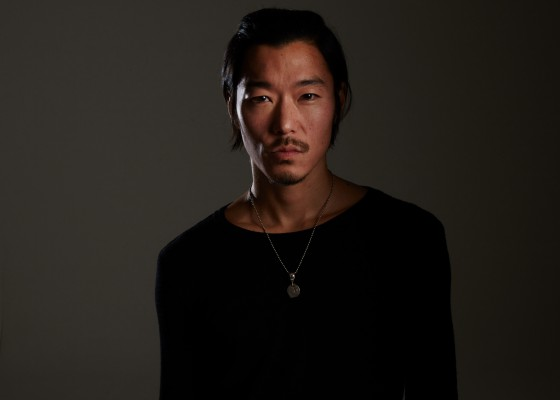
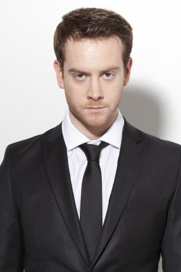
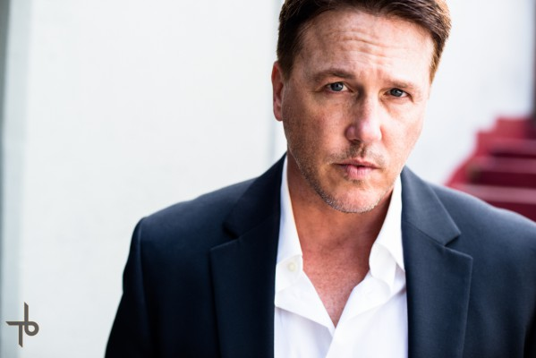
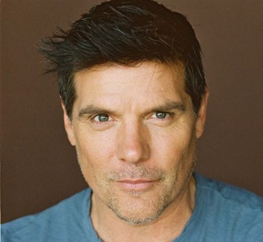
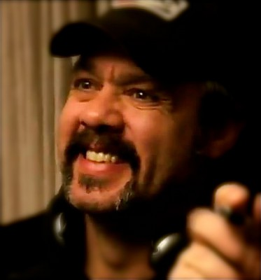
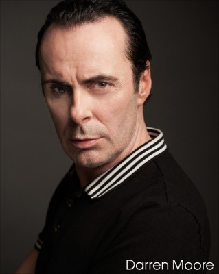

#8438 Cannabis Kid
Alternativ: Kid Cannabis

 IMDB-Wertung: 6.4 / 10
IMDB-Wertung: 6.4 / 10  Metascore: 0
Metascore: 0 
Nate Norman, ein achtzehnjähriger Schulabbrecher, mit seinem Freund Topher einen äußerst lukrativen Drogenring an der kanadischen Grenze. Das ausschweifende Leben, das der Drogenhandel mit sich bringt, steigt Nate aber bald zu Kopf.
Jahr: 2014
Dauer: 109 Minuten
FSK:
Land: USA Studio: Well Go USA EntertainmentTonspuren: DTS - ,
Untertitel:
Auflösung: 1080p (1920x1040) Größe: 6830 MB
Genre: Drama, Komödie, Krimi, Biographie
Regisseur:  John Stockwell
John Stockwell
Drehbuch: John Stockwell
Soundtrack: Irv Johnson
Darsteller:
- Jonathan Daniel Brown als Nate
 Kenny Wormald als Topher
Kenny Wormald als Topher-  Aaron Yoo als Brendan Butler
 Ron Perlman als Barry Lerner
Ron Perlman als Barry Lerner John C. McGinley als John Grefard
John C. McGinley als John Grefard- Corey Large als Giovanni Mendiola
 Bryce Hodgson als Scuzz
Bryce Hodgson als Scuzz- Jeffrey Ballard als Patrick Groves
-  Giacomo Baessato als Eddie Mendiola
- Merritt Patterson als Nicole
- Amanda Tapping als Nate's Mom
- Iain Belcher als Daniel Cox
 Ben Cotton als Joe Loya
Ben Cotton als Joe Loya-  Lochlyn Munro als Taser McCallum
- Jeffrey C.R. Wallace als Justin Miller
- Julia Benson als Julie Morgan
-  Paul Johansson als Terry Morgan
-  Sean Tyson als Agent Clemensen
- Christine Willes als Female Border Guard
- Michael Ian Farrell als Detective
 Brent Stait als RCMP Officer
Brent Stait als RCMP Officer- Mitchell Baker als Dino
- Karyn Halpin als Stripper
- Dylan Schmid als Skater Kid
- Jasmine Mooney als Crystal
 Christina Cox als Elke Greffard
Christina Cox als Elke Greffard-  Darren Moore als Bug-Eyed Guy
- Marz Lovejoy als Waitress (uncredited)
- Christian J. Stewart als FBI Agent / Forensics (uncredited)
- Alex Arsenault als Dustin Lauer
- Luke Jennings als Terry Dilliard
- Andrew Cavin als Dylan
- Kieran Large als Mike Hunt
- Mark Hills als Philip
- Kelt Eccleston als Eldon Hurst
- Kayla Wilson als Cute Girl
- Selwa Dahab als Receptionist
- Jaycine Cross als Border Guard #2 (uncredited)
- Tamara Hambly als Personal Trainer (uncredited)
- Francis Melling als Dispensary Patient (uncredited)
- Scott Schroeder als Border Agent Maxwell (uncredited)
- Michael Worth als FBI Agent (uncredited)
Datei: X:\2014(A-F)\Cannabis Kid (2014, FSK, 1920x1040).mkv seit 05.03.2018
Festplatte: HD 2013(I-Z)-2014(A-Z)
 Es gibt insgesamt 119 Filme in der Gruppe '2014(A-F)'
Es gibt insgesamt 119 Filme in der Gruppe '2014(A-F)'